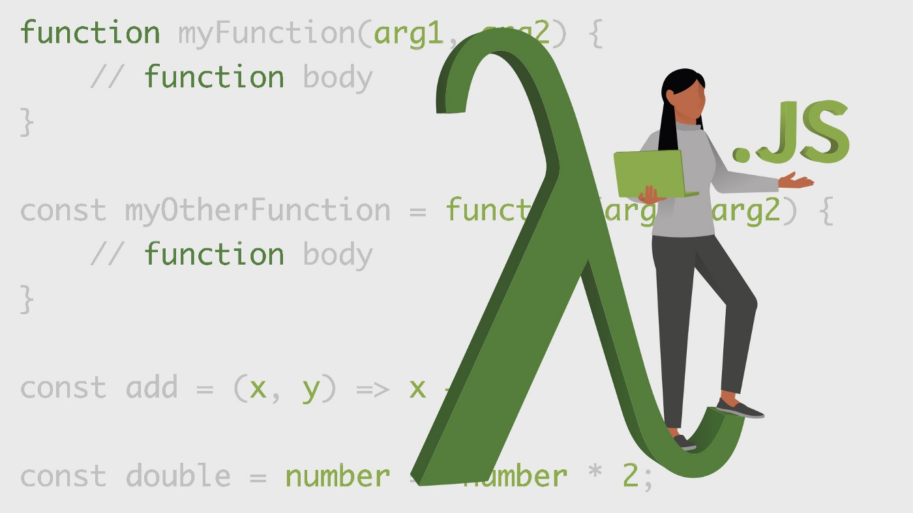
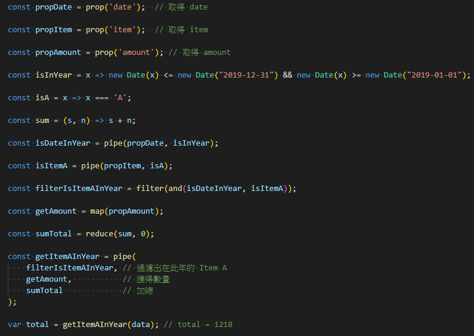

# [Javascript] Point Free Style 如何幫助提高程式可讀性
# 將資料流從程式行為中分離出來，讓焦點更關注在「做什麼」，而非「怎麼做」

前些日子我寫了篇關於 functional programming 的文章 ( Functional Programming 一文到底全紀錄 ) ，講述了當時對 FP 的學習心得，與在實務中應用後的一些想法。
之後陸陸續續收到了一些反饋，有人詢問：「FP 能做的事情，現在 OOP 都做得很好，什麼情況下需要用到 FP？」
關於這個問題，我的回答總是 FP 準則中的「避免副作用」、「一個 Function 只做一件事情」、「以 Function 為程式的最小單位」能使我們只需要關注 Function 的正確性即可，讓程式更佳可讀、更易維護。
# Point Free Style
如果你用中文搜尋 point free 相關的網站，可能會發現資料少得可憐，比較有系統的大概就是 阮一峰的一篇文章 ，我很推薦他的這篇，淺顯易懂的將 point free 的核心觀念帶出來。
那什麼是 point free style 呢？
用我的話來說，我會這樣解釋
point free style 是 FP 的應用；我們使用各種事先定義好的 function 組合出我們要做的事情，這些 function 都不牽涉到數據的處理。
數據流與程式行為 分離 開來，使我們只關注在 做什麼 ，而非 怎麼做 (如何處理數據)。
簡單的說就是：「 point free 沒有再跟你說資料長怎樣的 。」
程式的行為怎麼可能不看數據做事？
這聽起來很玄幻，但是藉由 FP 的觀念，一步一步的 Refactor 我們的 Code 是可以做到的。
舉一個小小的例子作為前菜
我們首先定義一些通用的 function
1
2
3
4
5
6
7
8const filter = f => l => l.filter(f);
const map = f => l => l.map(f);
const prop = p => obj => obj[p]; // 取得 obj 的 props
const pipe = (...fns) => x => fns.reduce((v, f) => f(v), x);
假設我想從公司人員列表中找出 員工 的名單：
1
2
3
4
5
6
7
8// 定義確認是否為 employee 的 function
const isEmployee = x => x === 'employee';
// 取得人員的 role
const propRole = prop('role');
// 找出員工的名單
const getEmployee = filter(pipe(propRole, isEmployee));
如此，當我的人員列表傳入 getEmployee 時，我便可以自動從中找出 role === 'employee' 的人員。
1
2
3
4
5
6
7const data = [
{name: "小明", role: "employee"},
{name: "小華", role: "employee"},
{name: "小英", role: "employee"},
{name: "小藍", role: "employee"},
{name: "大板", role: "admin"}
];
看到了嗎？ 我們在撰寫程式時，並不管 data 的資料型態與結構，一切等到資料來了，丟進去 function 即可。
這樣有什麼好處？
我們看看 getEmployee
1
2
3
4
5
6const getEmployee = filter(
pipe(
propRole, // 取得公司人員的 `role`
isEmployee // 檢查是否是員工
)
);
淺顯易懂、清晰直白。
利用 point free ，藉由將 data flow 抽離出來，我們可以更加關注在程式本身想表達的含意中。
# 如何以 point free 方式思考
我們舉一個比較貼近實務可能會碰到的例子。例如公司要計算某產品 A 當年度 (2019 年 01 月 01 日～12 月 31 日) 的總銷售量，資料如下：
1
2
3
4
5
6
7
8
9
10
11
12
13
14
15
16
17
18
19var data = [
{ date: "2018-01-01", item: "A", amount: 5 },
{ date: "2019-01-11", item: "B", amount: 10 },
{ date: "2018-02-05", item: "C", amount: 3 },
{ date: "2019-03-21", item: "A", amount: 1 },
{ date: "2018-04-18", item: "B", amount: 522 },
{ date: "2017-01-01", item: "C", amount: 51 },
{ date: "2016-01-13", item: "A", amount: 4 },
{ date: "2019-01-18", item: "A", amount: 345 },
{ date: "2018-12-18", item: "B", amount: 7 },
{ date: "2019-11-24", item: "B", amount: 64 },
{ date: "2019-07-15", item: "C", amount: 22 },
{ date: "2019-06-25", item: "A", amount: 546 },
{ date: "2019-04-04", item: "C", amount: 234 },
{ date: "2019-05-07", item: "B", amount: 1111 },
{ date: "2019-07-15", item: "A", amount: 236 },
{ date: "2019-10-16", item: "B", amount: 81 },
{ date: "2019-11-20", item: "A", amount: 90 },
];
依照一般程式撰寫邏輯，可能會寫成這樣
1
2
3
4
5
6
7
8
9
10
11var total = 0;
data.forEach(row => {
if (new Date(row.date) > new Date("2019-12-31") || new Date(row.date) < new Date("2019-01-01")) return;
if (row.item !== 'A') return;
total += row.amount;
});
// total = 1218
這個寫法也沒什麼不好，它很忠實地完成了我們需要的任務。但是我們無法一眼就看出 這段 Code 在做什麼 ，我們需要去讀裡面的程式邏輯，才能進一步知道這是在計算 A 產品的當年度營銷總數。
另外，由於 total 這個變數在迴圈外被定義，但是更動卻被隱藏在迴圈當中，我們難以一眼就將焦點關注到 total — 這段 code 的結果 (變數的隱匿性)。這也造成程式難以追蹤跟維護 (具有副作用)。
因此下一步，我們利用 FP 的觀念將程式重構。
1
2
3
4
5
6
7
8
9
10
11
12
13
14// 定義是否為當年度的資料
const isInYear = row => new Date(row.date) <= new Date("2019-12-31") && new Date(row.date) >= new Date("2019-01-01");
const isItemA = row => row.item === 'A'; // 定義是否為 A 貨物
const getAmount = row => row.amount; // 獲得 row 的數量
const sum = (total, num) => total + num; // 將營銷數量佳總
var total = data.filter(row => isInYear(row) && isItemA(row))
.map(getAmount)
.reduce(sum, 0);
// total = 1218
重構完後，我們一眼就可以知道 total 是我們最終求得的結果 ，並且我們可以很清楚地知道程式流程為
- filter 找出在此年度 (isInYear) 與是 Item A (isItemA) 的資料
- 擷取出資料的
amount - 加總後得到我們要的結果。
到這一步，其實程式也已經具有很高的可讀性了。唯一的遺憾是在這段，我們需要費一點功夫才能知道它想表達的是什麼。
1
2
3data
.filter(row => isInYear(row) && isItemA(row))
.map(getAmount).reduce(sum, 0);
若是以 point free 來改寫會變成什麼樣子呢？
我們利用上方已經定義好地 General function，如此就不用重新定義了。
首先我們將剛剛的程式邏輯中，碰到資料處理的部分細拆出來。
1
2
3
4
5
6
7
8
9
10
11const propDate = prop('date'); // 取得 date
const propItem = prop('item'); // 取得 item
const propAmount = prop('amount'); // 取得 amount
var isInYear = x => new Date(x) <= new Date("2019-12-31") && new Date(x) >= new Date("2019-01-01");
var isA = x => x === 'A';
var sum = (s, n) => s + n;
接下來，我們就可以利用這些 function 組合出我們要的 get_item_A_in_year 了。
1
2
3
4
5
6
7
8
9
10const get_item_A_in_year = pipe(
filter( and(
pipe(propDate, isInYear),
pipe(propItem, isA),
)),
map(propAmount),
reduce(sum, 0)
);
var total = getItemAInYear(data); // total = 1218
我們可以看到 getItemAInYear 並沒有依賴任何 data 的資料結構，我們完全關注在它要做什麼事情。
但是這種寫法其實看得也是挺痛苦的，所以我們可以再進一步優化， 將上面的邏輯再抽象出來。
1
2
3
4
5
6
7
8
9const isDateInYear = pipe(propDate, isInYear);
const isItemA = pipe(propItem, isA);
const filterIsItemAInYear = filter(and(isDateInYear, isItemA));
const getAmount = map(propAmount);
const sumTotal = reduce(sum, 0);
最終，我們利用上方定義好的各種 function ，組合出 getItemAInYear
1
2
3
4
5const getItemAInYear = pipe(
filterIsItemAInYear, // 過濾出在此年的 Item A
getAmount, // 獲得數量
sumTotal // 加總
);
到這步，有沒有覺得比起最初單純使用 for loop 的程式更加地直觀，且易讀又乾淨呢？
順便附上完整的程式碼

# 總結
point free style 的程式方式，是將 functional programming 的精神貫徹的更加徹底。
從上方兩個例子，我們可以很清楚發現，point free 真正做到「function 為最小單位」、「一個 function 只做一件事情」，將 FP 的程式撰寫精神最大化。
我個人認為 functional programming 的思維方式是需要訓練的。能否靈活地使用 point free 解決問題，體現出撰寫者對 FP 的熟悉程度。
命令式的程式撰寫可以很容易地解決問題；但是聲明式的程式撰寫風格除了將問題解決之外，更讓程式變得易讀、易維護，並精準地傳達撰寫者的思想。
由此可知，同樣的一件事情從 FP 的角度思考，與命令式程式那樣地平直思考，兩者的程式風格便有著天壤之別。
至於哪種方式更讓人喜愛或接受，就看各位怎麼看待了。
另外在看完上面的例子之後，應該會有不少人人產生「我只是想要做一個簡單的事情，卻要搞這麼多 Function，將事情變得這麼複雜」這樣的想法。
在 NPM 上有一個 Library 叫做 Ramda ，這是一套 專為 Javascript Functional Programming 設計的 General Library 。只要 Import 這套 Library 之後，我們就不用再額外自己手刻 general function 囉！
# 參考
- Pointfree 编程风格指南
- Favoring Curry
- Pointfree Javascript
- Real World Uses of Tacit Programming
- Javascript Functional Programming 指南
- 编码如作文：写出高可读 JS 的 7 条原则